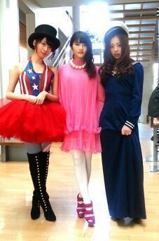
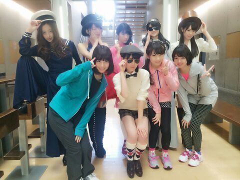

| 2014/04 10 Thu | ロマンスのスタート / エ チュード.♪ ろってぃ− |
おはよ〜\(#^.^#)/ ろってぃ−です.♪

この写真、何だか分かりますかあ？？
『 ロマンスのスタート 』のMV撮影の時です !!
MVでは 声が入ってなく動きだけを見てもらいましたが、
この撮影の時、本当に面白かったです。笑
えりか面白すぎるし、とりあえず寒いし、ズボンで隠れてるヒールの高さにも笑うし、終始皆で笑っていました(*´ー｀*)
集合だよ〜
 わん
わん

話かわりますが、今回のMVに付いていました
『 エチュード 』とゆうものがありましたね
ありがたいことに、たくさんの方に褒めて頂きました やった〜..*
やった〜..*
皆様からも握手会で『 だるま隊長ー！』と何度も呼ばれ、その度に『 だるまは大切にね 』だとか何か色々言っていました。
いやぁ〜、にしても エチュードとは即興演技なんですけれども、難しいと半面楽しかったですね！
正直ダルマを使って演技しろ.*と言われたときは動揺しましたけれどもね(*^-^*)
それにエチュードは皆、リアルなレッスン着でしたね♪
あっ、、、 そろそろいい時間なのでヘアメイク始めます
.* ではでは今日も1日ファイトです !
また更新します //
のし.Rotty
『 エチュード 』とゆうものがありましたね
ありがたいことに、たくさんの方に褒めて頂きました
やった〜..*
皆様からも握手会で『 だるま隊長ー！』と何度も呼ばれ、その度に『 だるまは大切にね 』だとか何か色々言っていました。
いやぁ〜、にしても エチュードとは即興演技なんですけれども、難しいと半面楽しかったですね！
正直ダルマを使って演技しろ.*と言われたときは動揺しましたけれどもね(*^-^*)
それにエチュードは皆、リアルなレッスン着でしたね♪
あっ、、、 そろそろいい時間なのでヘアメイク始めます
.* ではでは今日も1日ファイトです !
また更新します //
のし.Rotty
コメント(146)
2014/04/10 09:24